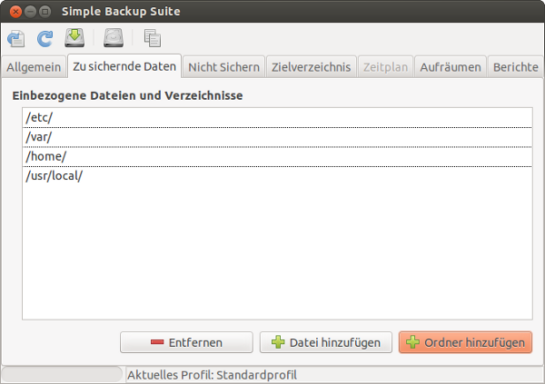
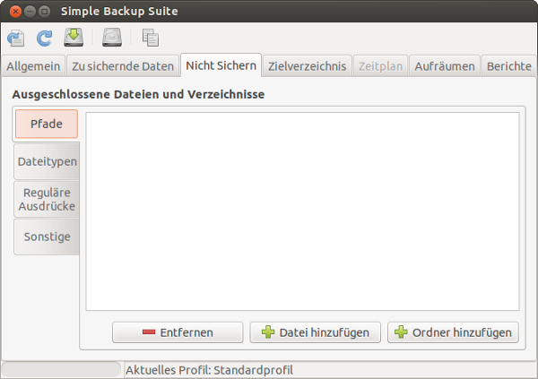
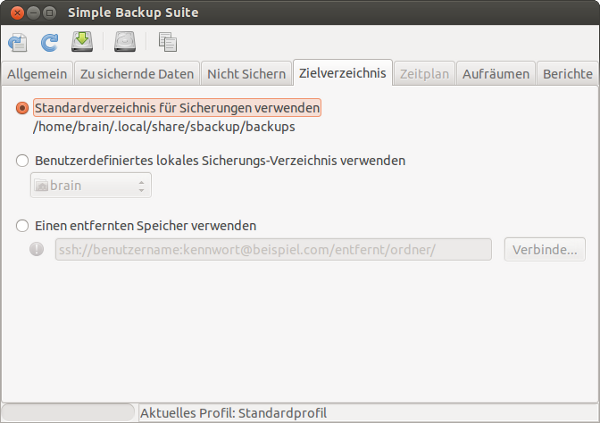
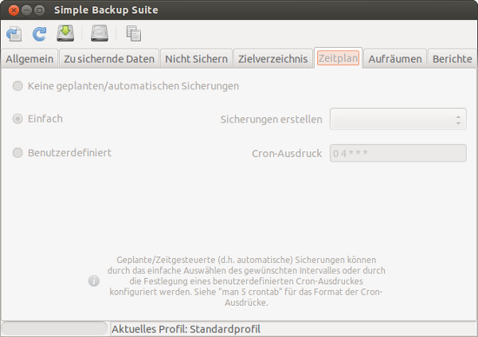
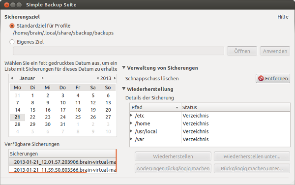

sbackup
Dieser Artikel wurde für die folgenden Ubuntu-Versionen getestet:
Ubuntu 14.04 Trusty Tahr
Zum Verständnis dieses Artikels sind folgende Seiten hilfreich:
sbackup  ermöglicht eine zeitgesteuerte oder manuelle Datensicherung, wobei der Fokus besonders auf Benutzerdaten und Systemkonfiguration liegt.
ermöglicht eine zeitgesteuerte oder manuelle Datensicherung, wobei der Fokus besonders auf Benutzerdaten und Systemkonfiguration liegt.
Installation¶
Das zu installierende [1] Paket heißt:
sbackup (universe)
 mit apturl
mit apturl
Paketliste zum Kopieren:
sudo apt-get install sbackup
sudo aptitude install sbackup
Danach kann die Anwendung gestartet werden [2]
Konfiguration¶
Die meisten Einstellungsmöglichkeiten sind selbsterklärend. Zunächst kann man eine generelle Auswahl zu den Zeitabständen, in denen Backups erstellt werden sollen, auswählen. "Use recommended backup settings" führt Standardsicherungen durch. Um automatisch in bestimmten Abständen Backups mit angepassten Einstellungen zu bekommen, empfiehlt sich die Wahl von "Use custom backup settings". Schließlich lassen sich die automatischen Sicherungen mit "Manual backups only" auch ganz abschalten.
In der Voreinstellung werden die Verzeichnisse mit den Daten und Einstellungen der Benutzer (/home), der Systemkonfiguration (/etc), veränderlichen Systemdateien (/var) und außerhalb der Paketverwaltung installierten Programme (/usr/local) gesichert. Gegebenenfalls kann man noch das Softwareverzeichnis /opt sowie einzelne zusätzlich hinzufügen, wie z. B. unter /media eingebundene Partitionen.

Was alles nicht mitgesichert werden soll, lässt sich über mehrere Einstellungsoptionen auswählen. Unter "Paths" lassen sich ganze Pfade angeben, die nicht gesichert werden sollen. In der Voreinstellung sind Verzeichnisse mit lediglich zwischengespeicherten Daten sowie das Verzeichnis /media, in welchem sich auch Wechseldatenträger wie CD-ROMs befinden, von der Sicherung ausgeschlossen.

Mit "File Types" lassen sich bestimmte Dateitypen angeben, die nicht gesichert werden sollen. Nicht zu sichernde Dateien lassen sich auch mit Hilfe von Regex-Ausdrücken auswählen. Und schließlich lassen sich unter "Size" Dateien auch anhand ihrer Größe ausschließen.
Als Ziel, auf das die Sicherung abgelegt werden soll, kann ein passender Wechseldatenträger oder eine Netzwerkfreigabe ausgewählt werden. Der Zielordner muss vorher schon bestehen, da sbackup ihn nicht selbst erzeugt. Ebenso braucht sbackup ausreichende Schreibrechte auf diesem Ordner.
Achtung!
Werden mit sbackup Datenträger beschrieben, dessen Filesystem aber nur Dateien bis zu einer bestimmten Größe unterstützt (z.B. USB-Platte mit FAT16/FAT32 Dateisystem), wird die Backup-Datei nur bis zur Dateigrößengrenze (bei FAT32 z.B. 4 GB) geschrieben und die Sicherung ist nicht vollständig.
Abhilfe schafft die Verwendung der Split-Funktion (Aufteilen der Sicherungsdatei) oder die Verwendung eines empfohlenen Dateisystems (z.B. ext4).

Sicherungen können stündlich, täglich, wöchentlich oder einmal jeden Monat erstellt werden. Es empfiehlt sich meist eine tägliche Sicherung. Normalerweise werden dabei nur die geänderten Daten gesichert. In einem einstellbaren Intervall wird ein vollständiges und entsprechend umfangreiches Backup erzeugt.

Sicherung¶
Achtung!
Bevor man vorschnell den Button "Backup Now" anklickt, sollte man seine Einstellungen "Speichern", sonst startet sbackup mit den Standard-Einträgen.
Manuell¶
Eine Sicherung kann manuell durch Klick auf "Backup now" gestartet werden.
Ein Statussymbol und Benachrichtigungen informieren über den Grad der Fertigstellung.
Automatisch (empfohlen)¶
Wenn man automatisch Sicherungen erstellen lässt, muss man nichts weiter tun. Ist Postfix auf dem System konfiguriert, so erhält man eine Mailnachricht (mbox in /var/mail) falls bei der Sicherung ein Fehler auftritt. (Die Mailnachricht wird nicht von sbackup sondern von cron (oder anacron) verschickt.)
Rücksicherung¶
Zur Rücksicherung dient das Programm "Simple Backup Restore". Dabei kann aus allen in einem Verzeichnis verfügbaren Sicherungen eine ausgewählt und die enthaltenen Dateien und Verzeichnisse unter ihrem ursprünglichen oder einem neuen Namen zurückgesichert werden.

Problembehebung¶
Ein externes Laufwerk ist nicht immer angesteckt¶
Oft werden Sicherungen auf externen Datenträgern wie z.B. einer externen USB-Festplatte gespeichert. Man kann auch den jeweiligen Pfad im Konfigurationswerkzeug für Sbackup angeben, jedoch wird implizit davon ausgegangen, dass das Laufwerk immer angesteckt und eingehängt ist. Da Sbackup auch keinerlei Meldungen über den Start oder das Ende des Backups ausgibt, kann es so passieren, dass die lokale Festplatte plötzlich ein Backup von sich selbst enthält. Je nach verfügbaren und benutzen Datenvolumen kann das sehr ärgerlich sein.
Eine Lösung ist, das folgende Skript zu verwenden. Die Softlinks auf sbackup müssen in den Ordnern /etc/cron.daily oder /etc/cron.weekly auf das Skript gesetzt werden. Beim nächsten automatischen Backup wird geprüft, ob das Laufwerk auch eingehängt ist. Falls nicht wird eine Fehlermeldung ausgegeben die an das Backup erinnert. Ein weiterer Vorteil ist, dass das Skript anzeigt, dass gerade ein Backup durchgeführt wird und eine Meldung ausgibt wenn die Sicherung beendet ist. Bitte beachten, dass noch wichtige Parameter wie das Laufwerk und der Benutzername angegeben werden müssen! Des Weiteren muss das Paket
libnotify-bin (universe)
mit apturl
Paketliste zum Kopieren:
sudo apt-get install libnotify-bin
sudo aptitude install libnotify-bin
installiert sein.
#!/bin/sh # Author: fensterplatz # This script is written for Sbackup. It checks if an external disk is mounted. If yes it # will call Sbackup (with a start- and finished-message) otherwise it will send an error-message. # To use this script, change the parameters at its head, save the code in a file called # 'sbackup' and set the accessibility to 'chmod ugo+x'. Further you have to replace the soft link # of sbackup in /etc/cron.daily, /etc/cron.weekly or the entry in /etc/crontab with the saved file. # # Using the ideas of a scipt which can be found at: http://gnome-hacks.org/hacks.html?id=82 # # HAS TO BE CHANGED - for expmaple '/dev/sdb1' drive='myDrive' # HAS TO BE CHANGED user='myUsername' startmessage='Es wird eine Sicherung auf Laufwerk '$drive' durchgeführt. Der Computer darf während dieses Vorgangs nicht heruntergefahren werden!' finishmessage='Die Sicherung ist abgeschlossen!' errormessage='Das BACKUP-Laufwerk ist nicht eingehängt. Es wurde keine Sicherung durchgeführt!' string=$(mount | grep $drive) if [ "$string" ]; then pids=`pgrep -u $user gnome-panel` for pid in $pids; do # find DBUS session bus for this session DBUS_SESSION_BUS_ADDRESS=`grep -z DBUS_SESSION_BUS_ADDRESS \ /proc/$pid/environ | sed -e 's/DBUS_SESSION_BUS_ADDRESS=//'` # use it DBUS_SESSION_BUS_ADDRESS=$DBUS_SESSION_BUS_ADDRESS \ su $user -c "notify-send -u critical -t 0 -i /usr/share/app-install/icons/sbackup-conf.png 'SBACKUP' '$startmessage'" done # here the backup is called /usr/share/sbackup/sbackup && pids=`pgrep -u $user gnome-panel` for pid in $pids; do # find DBUS session bus for this session DBUS_SESSION_BUS_ADDRESS=`grep -z DBUS_SESSION_BUS_ADDRESS \ /proc/$pid/environ | sed -e 's/DBUS_SESSION_BUS_ADDRESS=//'` # use it DBUS_SESSION_BUS_ADDRESS=$DBUS_SESSION_BUS_ADDRESS \ su $user -c "notify-send -u critical -t 0 -i /usr/share/app-install/icons/sbackup-conf.png 'SBACKUP' '$finishmessage'" done else pids=`pgrep -u $user gnome-panel` for pid in $pids; do # find DBUS session bus for this session DBUS_SESSION_BUS_ADDRESS=`grep -z DBUS_SESSION_BUS_ADDRESS \ /proc/$pid/environ | sed -e 's/DBUS_SESSION_BUS_ADDRESS=//'` # use it DBUS_SESSION_BUS_ADDRESS=$DBUS_SESSION_BUS_ADDRESS \ su $user -c "notify-send -u critical -t 0 -i /usr/share/icons/Human/32x32/status/gtk-dialog-warning.png 'SBACKUP' '$errormessage'" done fi
Alternativ kann unter KDE das folgende Skript verwendet werden. Hierfür sind keine zusätzlichen Pakete notwendig, der Name des Laufwerks muss aber auch hier angepasst werden.
#!/bin/sh # This script is written for Sbackup. It checks if an external disk is mounted. If yes it # will call Sbackup (with a start- and finished-message) otherwise it will send an error-message. # To use this script, change the parameters at its head, save the code in a file called # 'sbackup' and set the accessibility to 'chmod ugo+x'. Further you have to replace the soft link # of sbackup in /etc/cron.daily, /etc/cron.weekly or the entry in /etc/crontab with the saved file. # # Using the ideas of a scipt which can be found at: http://gnome-hacks.org/hacks.html?id=82 # # HAS TO BE CHANGED - for expmaple '/dev/sdb1' drive='/dev/external_usb' startmessage='Es wird eine Sicherung auf Laufwerk '$drive' durchgeführt. Der Computer darf während dieses Vorgangs nicht heruntergefahren werden!' finishmessage='Die Sicherung ist abgeschlossen!' errormessage='Das BACKUP-Laufwerk ist nicht eingehängt. Es wurde keine Sicherung durchgeführt!' string=$(mount | grep $drive) if [ "$string" ]; then dcop knotify default notify sbackup sbackup "$startmessage" '' '' 16 0 # here the backup is called nice /usr/share/sbackup/sbackup && dcop knotify default notify sbackup sbackup "$finishmessage" '' '' 16 0 else dcop knotify default notify sbackup sbackup "$errormessage" '' '' 16 0 fi
Links¶
Backing Up Data In Ubuntu Using sBackup
- Anleitung, die auch auf Purging eingeht (12/2007)Déjà Dup - ein sehr einfach gehaltenes Programm zur Datensicherung. Als Standardanwendung unter Ubuntu vorinstalliert.
Datensicherung
 Übersichtsartikel
Übersichtsartikel
- Erstellt mit Inyoka
-
 2004 – 2017 ubuntuusers.de • Einige Rechte vorbehalten
2004 – 2017 ubuntuusers.de • Einige Rechte vorbehalten
Lizenz • Kontakt • Datenschutz • Impressum • Serverstatus -
Serverhousing gespendet von